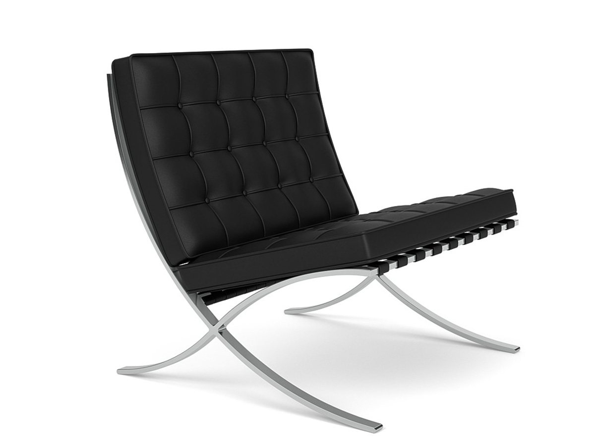
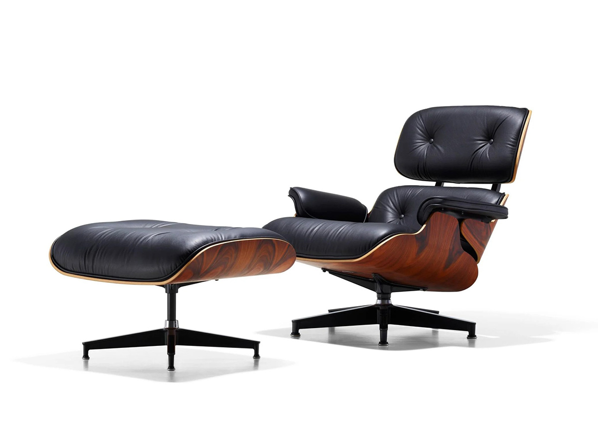
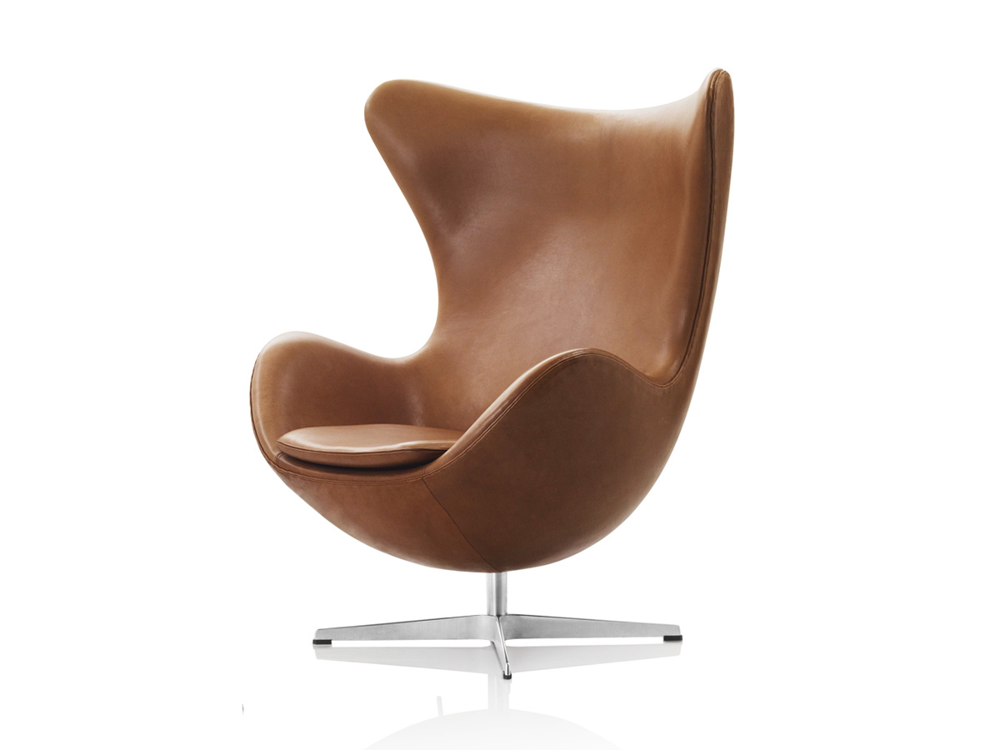
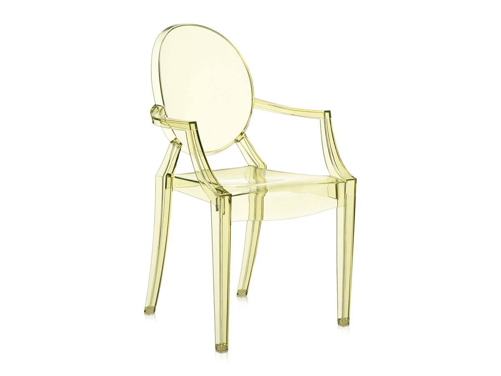
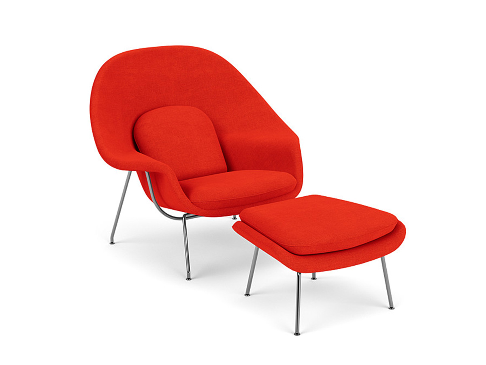
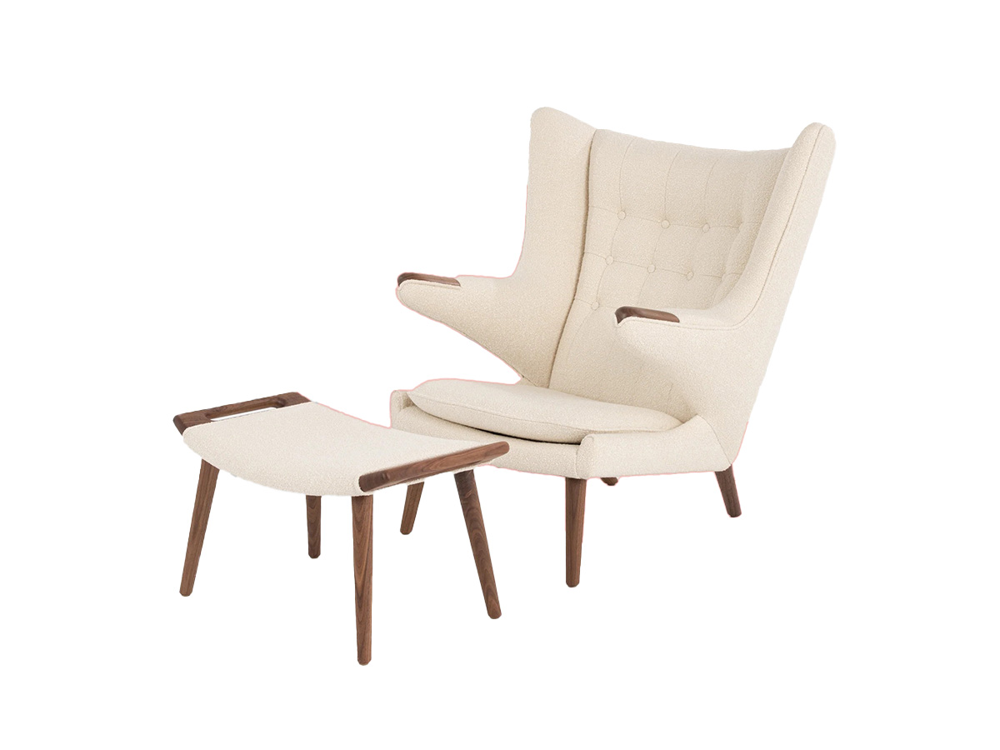
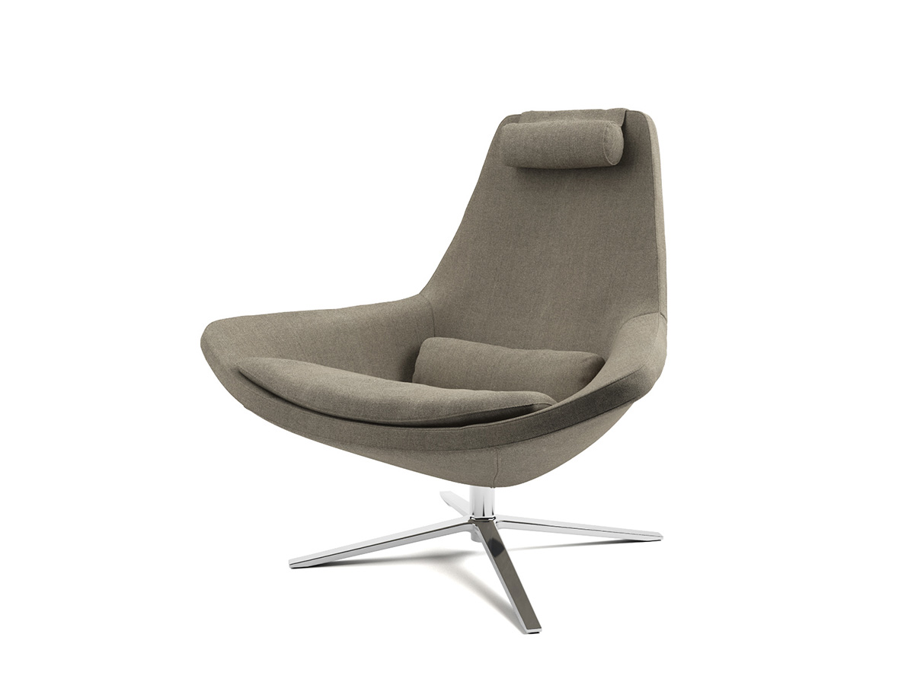
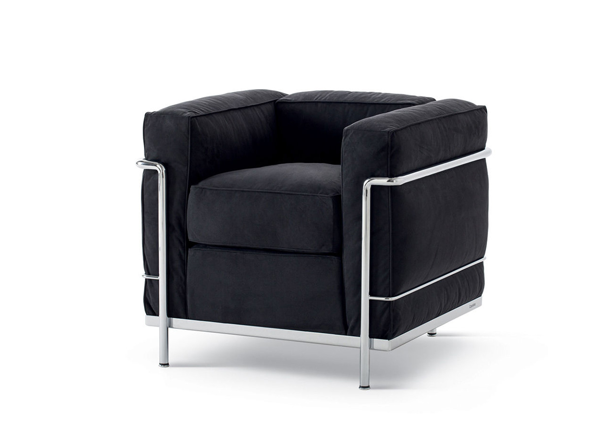
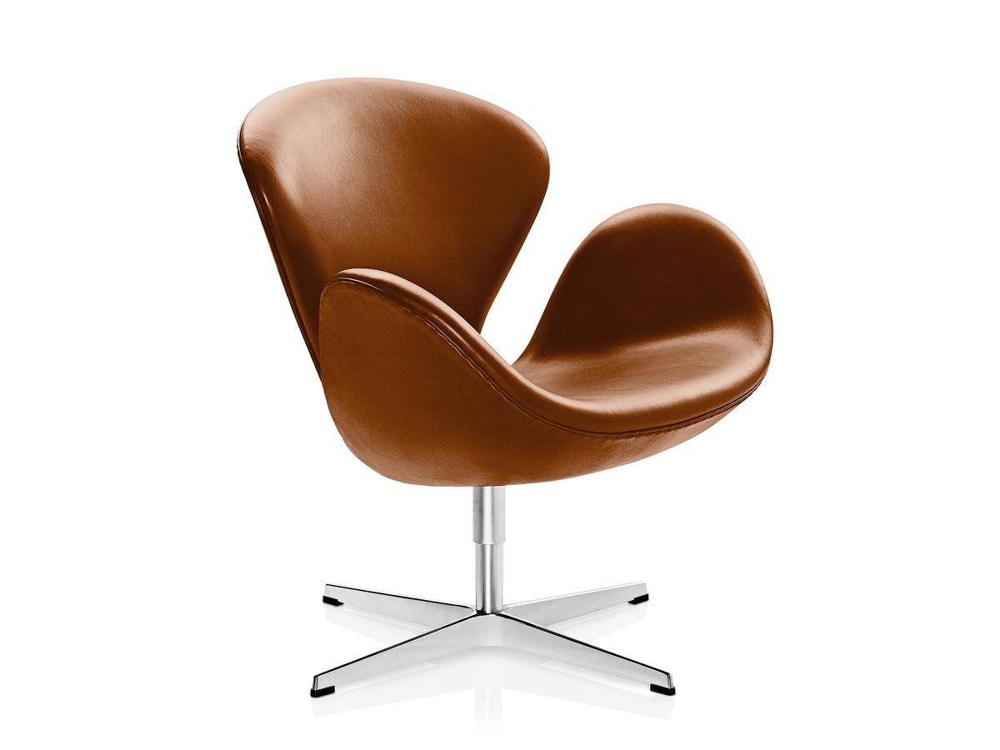

Barcelona Chair | Ludwig Mies van der Rohe and Lilly Reich

Eames Loung Chair | Charles and Ray Eames

Egg Chair | Arne Jacobsen

Louis Ghost Chair | Philippe Starck

Womb Chair | Eero Saarinen

Papa Bear Chair | Hans J. Wegner

Metropolitan Chair | Jeffrey Bernett

LC2 Poltrona Armchair | Le Corbusier, Pierre Jeanneret, and Charlotte Perriand

Swan Chair | Arne Jacobsen